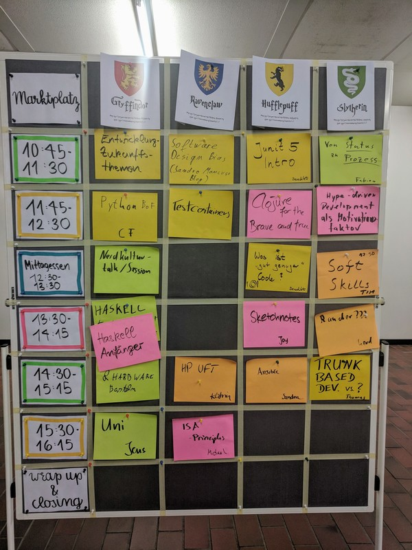

Sessions (Dez. 2017)
Bei der EntwickelBar hat es folgende Sessions gegeben:

Bilder
Notizen von Besuchern
Im Blog von Joy könnt ihr euch einen schönen Bericht zur letzten EntwickelBar anschauen:
https://joyclark.org/blog/sketchnote/unconference/2017/12/02/entwickelbar.html.
Danke für den Beitrag!
Danke auch an Felix Schumacher für seine Notizen zur EntwickelBar. Wir
möchten sie euch natürlich nicht vorenthalten!
Zukunftsthemen
- Internet in Gefahr durch Monopole großer Konzerne?
- Netzneutralität (Podcast: https://logbuch-netzpolitik.de/)
- Artificial Intelligence und Natural Language Processing
- Mozilla API für NLP (als Open-Source-Alternative): https://github.com/mozilla/DeepSpeech
- Sollte das Netz Infrastruktur sein und wie Strassen für alle zugänglich?
- Lorawan (https://de.wikipedia.org/wiki/Long_Range_Wide_Area_Network)
- http://luftdaten.info/
Hype-Driven-Development als Motivationsfaktor
- Beratungsfirmen entwickeln für den Verkauf notwendigerweise neue Trends
- "just back from a conference"-Effekt
(http://www.commitstrip.com/en/2016/04/26/the-just-got-back-from-a-conference-effect/)
- Konflikt zwischen Innovation als Motivationsfaktor und Business-Value
- möglicher Lösungsansatz: Innovation-Tokens (https://jaxenter.de/innovation-tokens-50334)
- Lean Coffee für Meetings in Unternehmen (http://german.leancoffee.org/)
- Themenspezifische Gilden in Unternehmen
- "Raupen" - (Leute, die zur Veranstaltung wg. des Essens kommen)
- Nicht jeder ist Google (/Netflix /Facebook /Amazon etc.)
- Viele "Hype-Themen" gab es vor längerer Zeit unter anderem Namen schon
- "IT-Archeologie" als ein intere
Ansible
- https://www.ansible.com/
- Serverprovisionierung und Deployment-Automation
- idempotent (https://de.wikipedia.org/wiki/Idempotenz)
- man beschreibt deklarativ, was man haben möchte
- infrastructure as code
- Docker kapselt Prozesse, ist aber nicht zur Provisionierung gedacht
- Alternativen:
- Puppet (https://puppet.com/de)
- Chef (https://www.chef.io/)
- Saltstack (https://saltstack.com/)
- man braucht auf den zu bespielenden Servern ssh und python
- man schreibt Skripte in yaml, diese werden in python umgewandelt
- Skripte nennt man "Playbooks", kommt vom Football
ISA-Principles
- Independent Systems Architecture
- http://isa-principles.org/
- angelehnt an 12-Factor-Apps (https://12factor.net/)
- Ansatz aber mehr aus Richtung Architektur
- es geht darum, Teams voneinander unabhängig zu machen, weniger darum, technische Unabhängigkeit zu schaffen
Agenda
| Uhrzeit |
Event |
| 9:30 |
Anmeldung |
| 10:00 |
Marktplatz |
| 10:45 - 11:30 |
1. Session |
| 11:30 - 11:45 |
kleine Pause |
| 11:45 - 12:30 |
2. Session |
| 12:30 - 13:30 |
Mittagessen |
| 13:30 - 14:15 |
3. Session |
| 14:15 - 14:30 |
kleine Pause |
| 14:30 - 15:15 |
4. Session |
| 15:15 - 15:30 |
kleine Pause |
| 15:30 - 16:15 |
5. Session |
| 16:15 - 17:00 |
Wrap Up und Closing |
Unsere Sponsoren
Veranstaltungen verursachen auch gerne einige Kosten. Daher möchten wir an dieser Stelle unseren Sponsoren danken,
denn ohne sie wären diese Veranstaltungen kaum möglich.
{kind=link}